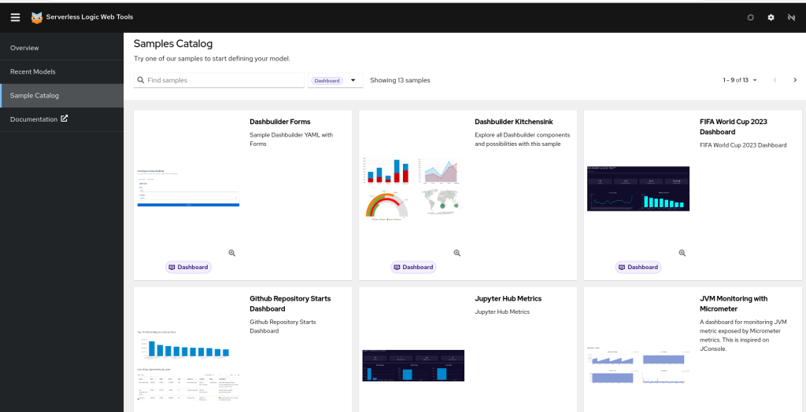
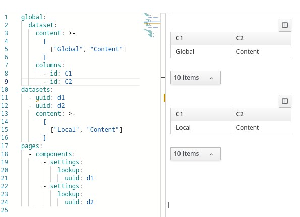
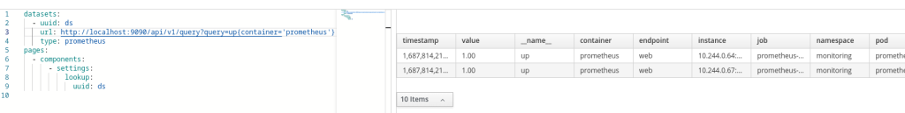
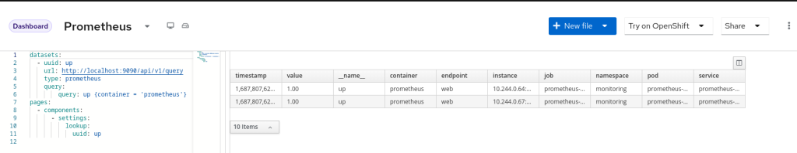
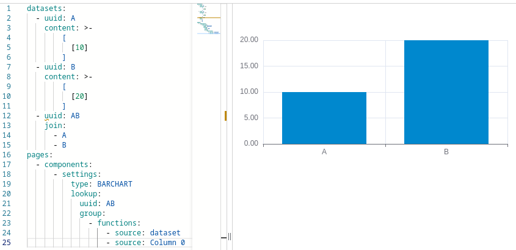
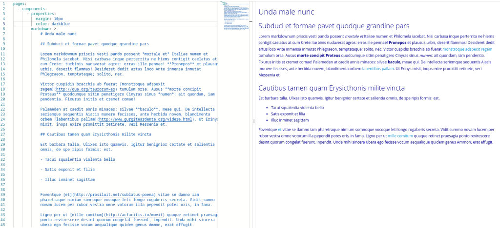
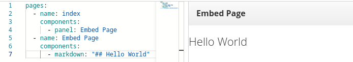
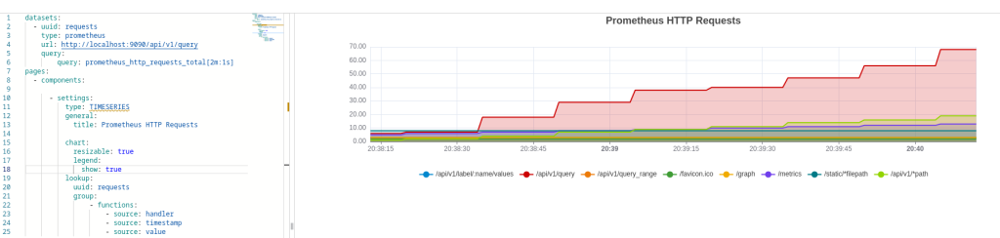

What’s new in Dashbuilder 0.30.0

Kie Tools 0.30.0 is out and with it we have multiple improvements to Dashbuilder. This post also includes Dashbuilder 0.29.0.
In this article we will explore the main features, but you can also check the release notes for version 0.29.0 and 0.30.0.
INSTALLATION
The new editor is live in Serverless Logic WebTools and the VSCode extension is already available on the marketplace.
For NPM package users just update the dashbuilder-client dependency version to 0.30.0.
New Editor
This KIE Tooling release highlight is the new interface for the Web Editor! It comes with a new Samples section which includes dashboards:

DataSets
Datasets are an important part of Dashbuilder. In this release we have multiple improvements related to datasets:
Global Dataset
You can declare global datasets that can have its values overridden by the local declaration. This can specially useful when we have multiple datasets that share the same configuration such as cache or url.

Types
Dataset now may have a type. With this we can easily consume some known sources of data and not be required to transform the data, it will done internally in Dashbuilder. For example, if you are consuming from Prometheus query API you just have to declare the dataset with "type" prometheus and it will work!

Query Parameters
A dataset can have a separated declaration for query parameters. Using the field "query" you can declare a map with parameters that will be added to the query parameters for the dataset URL.

Join
A new field "join" allow users to join other datasets into a single result. This is specially important to prometheus datasets because allow users to join two different metrics result into a single dataset. The join also adds a new column with the dataset uuid and it can be used as series in a XY chart. Important to notice that the joined datasets must have compatible columns (same type of columns in each position), otherwise the join fails!

New Components
A few new components were added to this release, let’s talk about them.
Markdown
It is possible to use markdown language. It is an alternative to html component. Markdown are easier to read and write and you still can apply CSS properties to it using the properties map. To use this component just add a markdown declaration followed by the markdown content.

Panel
A collapsible panel is now available. With it you can embed pages but with a title that can be collapsed. The panel title is always the page name, you just have to use the following component declaration: panel: page name

Timeseries
The timeseries is now an internal component and it works like the old external component: it accepts three columns, the first has the series, the second the timestamp and the last the value. This makes it compatible with Prometheus queries.

General Improvements
This version also brings a few more improvements to Dashbuilder:
- Column settings support for timeseries and meter charts;
- Updated the metrics dashboard deployed from Kubesmarts
- Metrics datasets now prevent problems with NaN
- Cleanup of outdated files
Conclusion
In this article we described another exciting new release for Dashbuilder! The goal of this release was to make Dashbuilder a better tool for monitoring services, hence a new post will cover Prometheus dashboards with Dashbuilder.